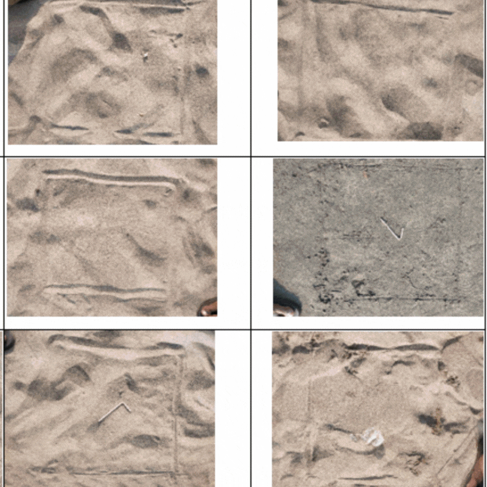
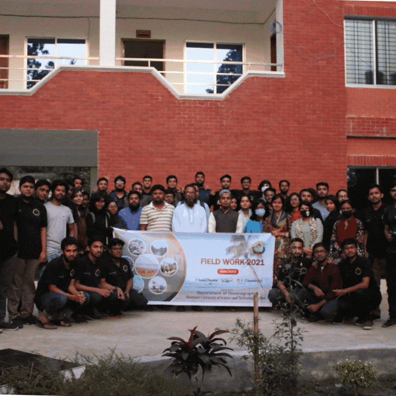
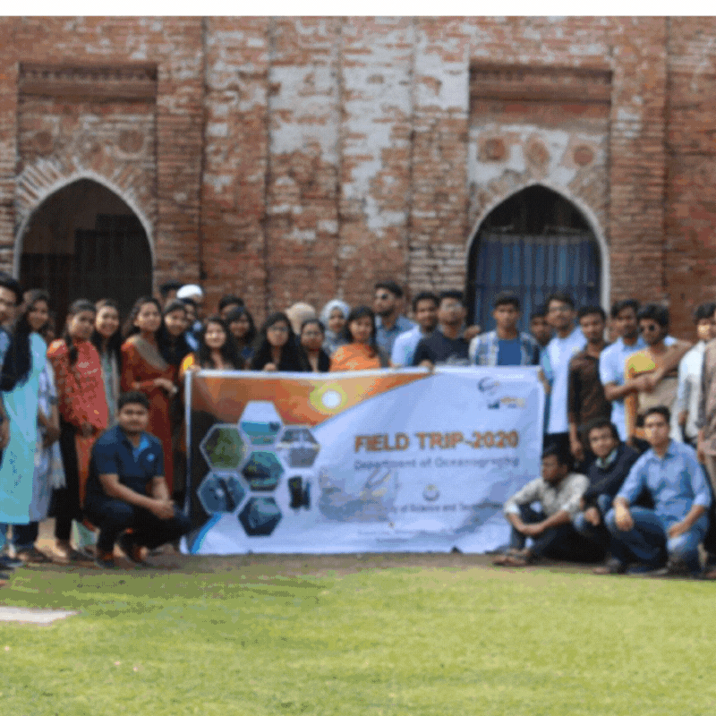

Field Works
Cox's Bazar Field Trip
Field Work | 2023

- Used quadrant and transect sampling techniques to collect various types of plastic materials from the beach
- Analyzed the collected samples and found that polythene and plastic bottles were the most prominent types of waste
- Explored the Bakkhali River estuary, observing various types of aquaculture including: Seaweed farming, Oyster farming, Green mussel farming, Vetki and Khoral culture
- Collected water data using a mini CTD to measure key parameters like temperature, salinity, and conductivitys
Kuakata Field Trip
Field Work | 2022

- Explored facilities and observed ongoing research and operations at the Bangladesh Fish Research Institute(BFRI).
- Used a CTD instrument to collect and analyze data on temperature, salinity, and conductivity from various sites
- Employed DO meter, pH meter, and turbidity meter for in-situ analysis of water quality parameters
- Collected sediment samples using an Ekman grab sampler for texture and composition analysis
Sundarbans Mangrove Forest
Field Work | 2020

- Collected sediment samples using a grab sampler for particle size and organic content analysis
- Collected plankton samples at Trikon Island to study biodiversity and primary productivity
- Collected temperature, salinity, and pH data from various locations for a comprehensive analysis of water quality
- Engaged with local fishermen at Dublar Char to understand traditional practices and conservation challenges
- Observed wild deer at Hiron Point, noting biodiversity within the Sundarbans ecosystem
Cox's Bazar & St. Martin's Island
Field Work | 2019

- Observed coral ecosystems around Saint Martin Island, focusing on biodiversity and conservation challenges
- Measured temperature, salinity, and pH using water multiparameter at various coastal sites
- Visited the Fish Landing Center to observe local fisheries operations
- Visited Radiant Fish World, the first sea aquarium in Bangladesh, to study marine aquatic biodiversity